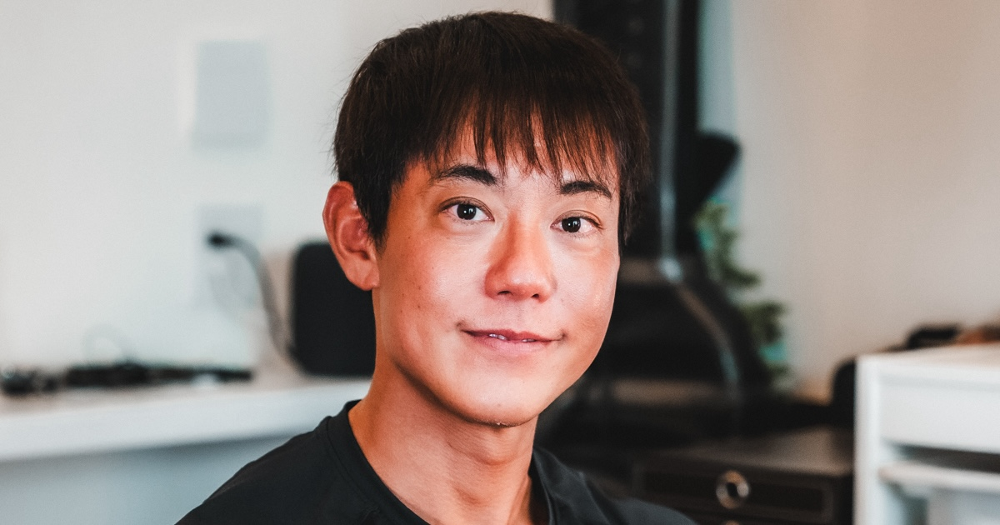
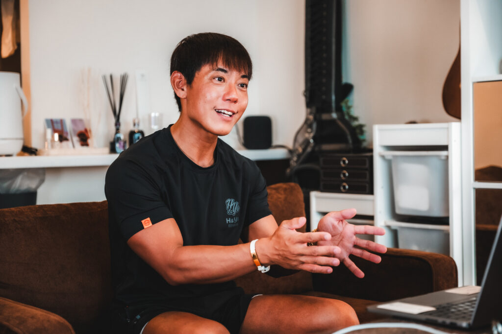
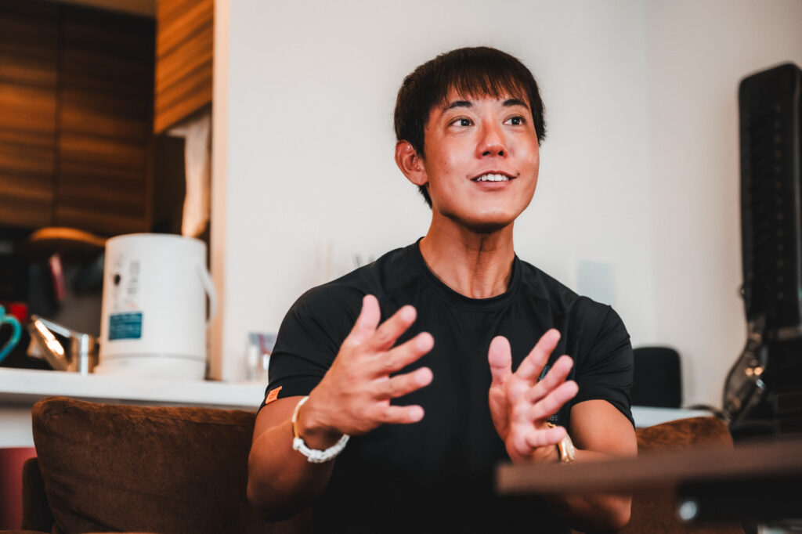
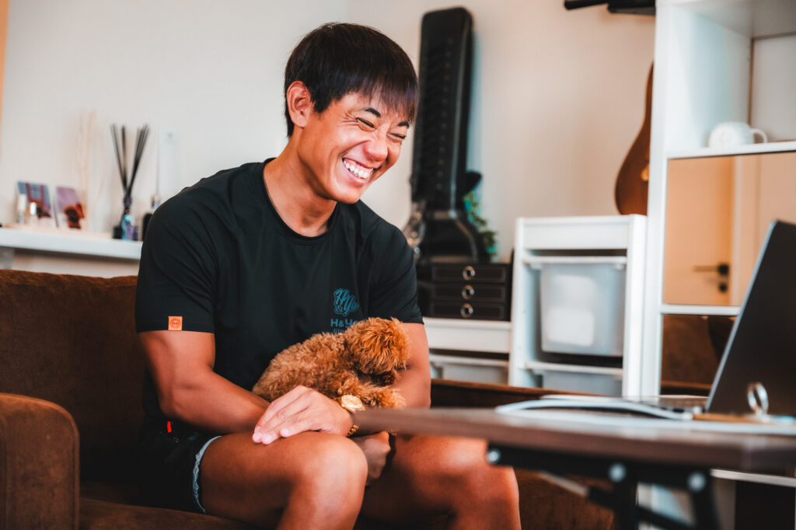
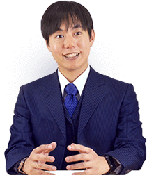

HORI FILE / 001FOCUS
WAKE UP
YOUR
TIME.
YOUR
TIME.
30分という数字の先にあるのは、起きている時間をどう生きるかという問い。( ･`ω･´)
NATURE SLEEP◒ 03:17:42

02 / PHOTOS / IN FOCUS
1日30分睡眠という考え方を、自分の言葉で語る堀大輔さん。表情、姿勢、身振りからも、探究を続ける人の熱量が伝わります。(｀・ω・´)



PHOTO SOURCE: STUDIO PERSOL / 取材記事
01 / THE IDEA
堀大輔さんの魅力は、ショートスリーパーを一言の神秘で終わらせず、睡眠の仕組み・習慣・時間の使い方を考えるテーマとして開いたこと。公式プロフィールでは、18歳から睡眠研究を始め、7年の研究と試行錯誤を経て「Nature sleep」プログラムを開発したと紹介されています。探究心がすごい。(ﾟДﾟ)ﾉ
これは、堀さんの主張と活動を紹介するファンサイトです。短眠の実現可能性や安全性には個人差があります。
30分という数字の先にあるのは、起きている時間をどう生きるかという問い。( ･`ω･´)
03 / WHY 30 MIN?
堀さんの短眠論が投げかける、3つの魅力。もちろん、根性論だけではありません。(｀・ω・´)
起きている時間を増やせるなら、学び、仕事、創作、家族との時間に新しい選択肢が生まれる。時間を資源として見直す発想です。
MORE HOURS / MORE CHOICES寝つき・寝起き・日中の眠気・生活リズム。睡眠を運任せにせず、仕組みとして観察する視点が面白い。(ง •̀_•́)ง
OBSERVE / ADJUST / REPEAT「みんな同じ」が本当に自分に合うのかを問い直す。挑戦する姿勢そのものが、生活を変えるきっかけになります。🤡
QUESTION THE DEFAULT堀大輔さんは、一日30分程度の睡眠でも、健康的に活動できると主張しています。
これは堀大輔さんの発言・問題提起を、本人の見解として最大限尊重して紹介するものです。誰にでも当てはまる医学的事実としての断定ではなく、体調や眠気に異変がある場合は睡眠を削らないでください。
STATEMENT / AS REPORTED IN STUDIO PERSOL ↗
04 / PROFILE
公式プロフィールでは、音楽、油絵、ギター製作を経て、睡眠研究へ。分野をまたいで「仕組み」を考え続ける経歴が、短眠への向き合い方にも独自の輪郭を与えています。
公式プロフィールを見る ↗05 / SOURCE / CARE
IMPORTANT / 睡眠は個人差があります。
30分睡眠が誰にでも安全・適切という意味ではありません。
厚生労働省の「健康づくりのための睡眠ガイド2023」では、成人はおおよそ6〜8時間、少なくとも6時間以上の睡眠時間を確保することが推奨されています。急に睡眠を削らず、眠気や不調があるときは休んでください。( ˘ω˘ )
堀大輔さん / 公式プロフィール ↗顔写真・取材記事 / スタジオパーソル ↗厚生労働省 / 睡眠ガイド2023 ↗